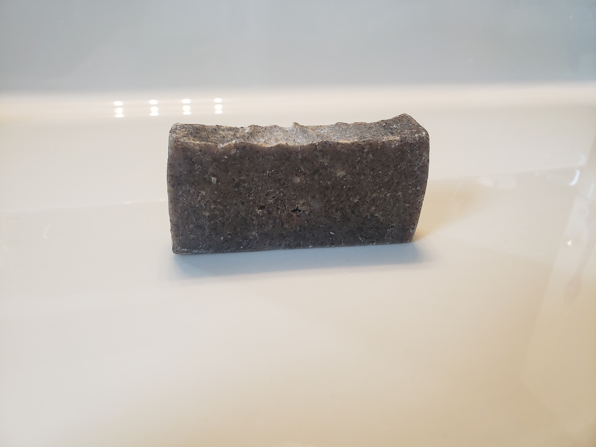

This is a soap that is great for using on bad acne. It works really well to clear up any acne and can be used on a daily basis. It might not smell great, but it works well and has no artificial scents and it is made of all natural ingredients.
This soap is great for getting rid of bad smells on your hands. So if you have any sort of onion smell or any other bad smell like that. This will do the trick. Like all our other soaps, this is made from all natural ingredients and has no artificial scents or colours.